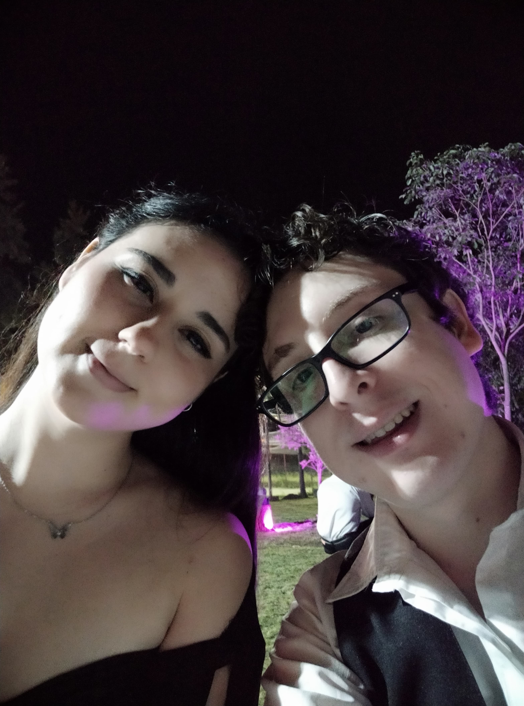

Llegamos a la flor de loto de las bodas del 2022, la de David y Tomy. Dos personas, con las que mantengo contacto, hace poco hicimos videollamada con tomy
y pude ver a David, con Majo, Dante y Jose Luis cuando fueron a Barcelona por el cumpleaños de David este año. Son dos personas que valoro muchisimo, las cuáles se preocupan
de una forma impresionante por mi y siempre me tienen en mente. Por lo mismo, el que hayas compartido estas dos bodas conmigo, es ultra mega importante, ya que, pasamos unas
hermosas noches, comimos muchisimo, bailamos y disfrutamos con muchisima gente esos hermosos momentos. Debo decir, no hubiera querido que otra persona
me acompañe a esas bodas, el hecho de que fuiste conmigo, las hizo mágicas y especiales a cada una de ellas, sin contar que me sentí tan pero tan bendecido y afortunado
de que una diosa hecha carne, con su hermosura exaltante, quiera tener a este simple plebeyo a su lado.
No hay mucho más que decir, esas bodas las guardaré eternamente conmigo y, bueno, espero que tu también, ya que tienes esas fotos de la boda de tomy, que espero que las guardes
con mucho cariño y que no las vayas a tirar nunca por favor.
Esta canción elegida es más pensando en que, cuantas bodas tengas junto a ti, solo refuerza mi idea y mi visión de, sos la única persona con la que me imagino al lado en mi propia boda,
la única persona a la que visualizo frente a mi con un hermoso vestido blanco, diseñados por los mismisimos ángeles, dríades y serés faéricos. De la misma forma
que Luella vistió un hermoso vestido para su boda y coronación con Eldas, estoy seguro que no serás menos que ella en ningún sentido.